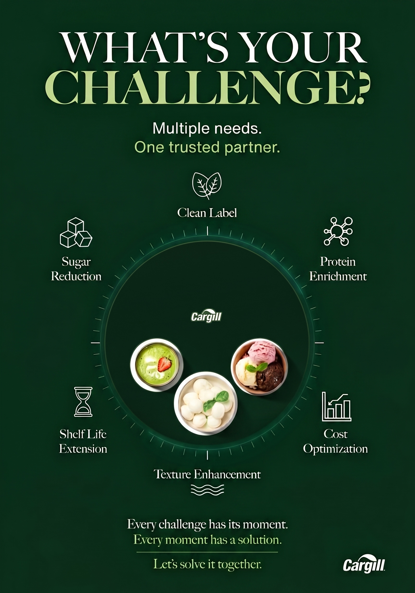

CARGILL
/ STAND GÖSTERİSİ
Video → Saat → Video → Saat · kesintisiz döngü
1 · Videolar
＋
Video dosyalarını buraya sürükleyin
veya
dosya seçin
· mp4 / webm / mov
Henüz video eklenmedi.
media/ klasörünü tara
Listeyi temizle
2 · Ayarlar
Saat ekranda kalma süresi
saniye
Geçiş yumuşatma
ms (0 = sert kesme)
Video ekrana oturma
Ekranı doldur (kenarlardan kırp)
Tamamı görünsün (kenarda boşluk)
Saat görseli oturma
Tamamı görünsün (önerilen)
Ekranı doldur (kenarlardan kırp)
Sıra
Sırayla
Karışık
Video sesi açık
Saniye ibresi
Işık huzmesi ibreleri takip etsin
Akıcı ibre hareketi
3 · Saat önizleme
--:--
GÖSTERİYİ BAŞLAT
Sadece saati tam ekran göster
Tam ekrana geçer. Çıkmak için
Esc
.

Başlatmak için dokunun
Tarayıcı otomatik oynatmaya izin vermedi